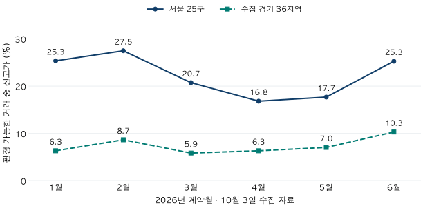

거래량 읽기 · 신고가의 조건과 분모
아파트 신고가 비율, 무엇을 분모로 셀까? 기준과 해제 읽기
2026년 상반기 서울·수집 경기의 신고가 건수와 판정 가능한 거래를 비교합니다. 면적·과거 해제 처리에 따른 비율 차이, 이후 해제를 비교할 관찰 기간과 한계를 확인해 보세요.
분석 기간 · 2026년 1~6월 계약 · 해제 비교 1분기 | 보유 자료 스냅샷 생성 · 2026-10-10 · 수집일 2026-10-03
아파트 신고가가 나왔다는 소식을 보면 주변 집값도 함께 올랐는지 궁금해집니다. 2026년 상반기 서울에서 이 글의 기준으로 판정 가능한 거래 36,647건 중 신고가는 7,867건, 21.5%였습니다. 수집 경기 지역은 7.4%입니다. 다만 같은 서울 자료라도 전체 계약을 분모로 쓰면 19.9%, 정확한 전용㎡별로 판정하면 25.3%가 됩니다. ‘신고가 비율’에는 비교 대상과 분모가 함께 적혀 있어야 합니다.
이 글에서 말하는 ‘아파트 신고가’는 무엇인가요?
같은 단지와 같은 전용면적형의 앞선 거래보다 명목 전용평당가격이 높은 계약을 셉니다. 전용면적형은 전용㎡를 3.3058로 나누고 반올림한 정수 평수입니다. 따라서 정확한 ㎡까지 같은 집끼리 비교한 결과와 다를 수 있습니다. 총액 기준과 정확한 ㎡ 기준도 뒤에서 함께 보여드립니다.
비교 이력은 보유한 2010년 이후 자료입니다. 단지의 평생 최고가나 모든 서비스가 쓰는 신고가 정의가 아닙니다. 최소한 앞선 유효 거래 5건과 첫 거래 이후 365일이 있어야 판정합니다. 같은 날 계약은 선후를 알 수 없어 서로의 과거 거래로 쓰지 않고, 기존 최고가와 같은 가격은 신고가로 세지 않습니다.
기본 이력에서는 해제사유일이 새 계약일보다 빠른 과거 계약만 뺍니다. 새 계약일 이후 해제된 과거 거래까지 미리 지우지는 않습니다. 해제 날짜가 불명확해 결과가 달라질 수 있으면 판정불가로 남깁니다. 이는 해제사유일을 이용한 사후 재구성이며, 당시 화면에 어떤 거래가 공개돼 있었는지를 복원한 결과는 아닙니다.
대상은 서울 25구와 수집된 경기 36개 시·구의 2026년 1~6월 계약입니다. 인천과 미수집 경기 지역을 포함한 수도권 전체가 아닙니다. 당기 계약은 나중에 해제됐어도 남기고, 유효한 가격·면적과 단지 정보가 있는 비직거래를 이력 판정에 사용합니다. 명시적 직거래와 토지임대부 등 제외 조건을 적용하므로 해제를 제외한 평년 거래량 글과 건수가 다릅니다.
서울 신고가 비중은 21.5%인가요, 19.9%인가요?
둘 다 계산되지만 분모가 다릅니다. 서울의 정제 계약 전체는 39,595건, 이력 판정의 대상은 38,146건, 실제 판정 가능한 계약은 36,647건입니다. 판정 대상 중 1,499건은 과거 이력 부족이나 불명확한 이력 때문에 남겨 두었습니다. 나머지 1,449건은 직거래 등 이력 판정 제외 조건에 해당합니다.
판정 가능한 거래 중 신고가 비중 = 7,867 ÷ 36,647 × 100 = 21.5%
전체 계약 39,595건을 분모로 하면 19.9%입니다. 이 값은 전체 계약 중 ‘이번 기준으로 확인한 신고가’의 몫이지, 모든 계약을 판정한 뒤 얻은 신고가 확률이 아닙니다. 판정불가를 비신고가로 취급하면 두 비율의 차이를 놓치게 됩니다.
수집 경기에서는 전체 80,853건 중 77,716건이 판정 대상이고, 76,120건을 판정했습니다. 신고가 5,664건은 판정 가능 거래의 7.4%입니다. 서울과 경기의 차이가 지역 효과만을 뜻하지는 않습니다. 거래된 단지·면적·층과 오래된 가격 이력의 구성이 서로 다릅니다.
상반기 비중은 매달 비슷했을까요?
서울은 2월 27.5%, 4월 16.8%, 6월 25.3%였습니다. 수집 경기의 6월은 10.3%입니다. 아래 선은 그달 판정 가능한 계약 중 신고가의 비중이며, 전체 아파트 중 가격이 오른 비율이나 같은 주택의 가격지수가 아닙니다. 전월과 거래된 주택 구성이 달라질 수 있습니다.

| 기간 | 전체 계약 | 판정 대상 | 판정 가능 | 신고가 | 판정 가능 중 비중 |
|---|---|---|---|---|---|
| 상반기 | 39,595 | 38,146 | 36,647 | 7,867 | 21.5% |
| 1월 | 5,403 | 5,283 | 5,085 | 1,289 | 25.3% |
| 2월 | 5,812 | 5,652 | 5,466 | 1,502 | 27.5% |
| 3월 | 5,543 | 5,327 | 5,122 | 1,062 | 20.7% |
| 4월 | 8,726 | 8,379 | 8,039 | 1,352 | 16.8% |
| 5월 | 8,784 | 8,364 | 7,991 | 1,413 | 17.7% |
| 6월 | 5,327 | 5,141 | 4,944 | 1,249 | 25.3% |
| 기간 | 전체 계약 | 판정 대상 | 판정 가능 | 신고가 | 판정 가능 중 비중 |
|---|---|---|---|---|---|
| 상반기 | 80,853 | 77,716 | 76,120 | 5,664 | 7.4% |
| 1월 | 13,007 | 12,620 | 12,359 | 783 | 6.3% |
| 2월 | 10,935 | 10,566 | 10,319 | 893 | 8.7% |
| 3월 | 13,090 | 12,452 | 12,189 | 714 | 5.9% |
| 4월 | 14,172 | 13,397 | 13,146 | 833 | 6.3% |
| 5월 | 14,765 | 14,200 | 13,935 | 981 | 7.0% |
| 6월 | 14,884 | 14,481 | 14,172 | 1,460 | 10.3% |
상반기 비중은 월별 비율의 단순평균이 아니라 신고가 건수 합계 ÷ 판정 가능 건수 합계입니다. 거래가 많고 신고가가 적은 달과 거래가 적고 신고가가 많은 달은 서로 다른 장면입니다. 한 달의 변화만으로 상승이 퍼졌다고 결론 내리기 전에 반복 거래와 가격 분포를 함께 봐야 합니다.
신고가 기준이 달라지면 같은 자료도 달라질까요?
서울의 정확한 전용㎡ 기준은 9,129 ÷ 36,042 = 25.3%로, 기본 전용면적형 기준 21.5%보다 높습니다. 면적이 세밀해지면 과거 비교 집합과 판정 가능한 계약 자체가 달라집니다. 어느 숫자가 무조건 더 옳다는 뜻보다, 다른 비교 질문이라는 점이 중요합니다. 같은 면적 안에서도 층·향·동·수리 상태는 여전히 같지 않을 수 있습니다.
현재 해제되지 않은 과거 거래만 남기면 서울은 7,931건을 신고가로 셉니다. 기본 7,867건과 차이가 납니다. 나중에 해제된 높은 거래를 과거에서 지우면 당시에는 최고가가 아니었던 계약도 새 최고가처럼 보일 수 있습니다. 현재 생존 이력은 사후 비교용이며 당시 신고가를 복원하는 기준으로 사용하지 않습니다.
| 판정 기준 | 판정 가능 | 신고가 | 비중 |
|---|---|---|---|
| 해제일 기준 이력 · 기본 | 36,647 | 7,867 | 21.5% |
| 모든 신고 이력 | 36,681 | 7,750 | 21.1% |
| 현재 해제 없는 과거 이력 | 36,641 | 7,931 | 21.6% |
| 총액 비교 | 36,647 | 7,789 | 21.3% |
| 정확한 전용㎡ 비교 | 36,042 | 9,129 | 25.3% |
| 선행 10건 이상 | 35,668 | 7,283 | 20.4% |
수집 경기의 같은 여섯 기준도 보기
| 판정 기준 | 판정 가능 | 신고가 | 비중 |
|---|---|---|---|
| 해제일 기준 이력 · 기본 | 76,120 | 5,664 | 7.4% |
| 모든 신고 이력 | 76,147 | 5,552 | 7.3% |
| 현재 해제 없는 과거 이력 | 76,083 | 5,725 | 7.5% |
| 총액 비교 | 76,120 | 5,592 | 7.3% |
| 정확한 전용㎡ 비교 | 75,414 | 7,153 | 9.5% |
| 선행 10건 이상 | 75,398 | 5,449 | 7.2% |
모든 신고 이력은 해제된 과거 거래도 포함합니다. 총액 비교는 평당가격 대신 계약 금액을 비교하고, 정확㎡ 비교는 단지와 기록된 전용㎡가 모두 같은 이력을 씁니다. 선행 10건 기준은 확실한 과거 거래가 10건 이상인 경우만 남깁니다. 모든 민감도는 같은 상반기를 사용했으며 결과에 맞춰 유리한 기간을 고르지 않았습니다.
신고가 계약은 나중에 더 자주 해제됐나요?
먼저 같은 기간을 충분히 관찰해야 합니다. 이번 상반기 계약의 검증 수집일은 2026년 10월 3일입니다. 1분기 계약은 180일을 모두 관찰할 수 있지만 상반기 후반 계약은 그렇지 않습니다. 그래서 주 비교를 1~3월 계약의 180일로 고정했습니다. 이미 해제가 보였다는 이유로 관찰 기간이 짧은 계약을 분모에 섞지 않습니다.
해제사유일이 계약일 이후 180일 이내인지 확인하고, 해제 표시가 있지만 날짜가 불명확한 경우는 불확실성으로 남깁니다. 원칙적인 해제율 범위는 날짜가 확인된 해제 건수 ÷ 관찰 성숙 건수부터 (확인된 해제 + 시점 미상) ÷ 관찰 성숙 건수까지입니다. 이 범위는 표본오차를 나타내는 신뢰구간과 다릅니다.
이번 자료에는 해제 시점 미상 집단 중 공개 최소 건수에 못 미치는 셀이 있습니다. 작은 건수를 총계나 비율로 역산하지 못하도록 관련 해제 건수와 비율은 함께 미공개합니다. 관찰 가능한 분모와 미성숙 건수는 아래에 남겼습니다. 365일 결과가 없는 것은 해제가 없어서가 아니라 관찰 기간이 부족해서입니다.
90·180·365일 관찰 분모와 미공개 사유
| 계약 기간 · 관찰일 · 집단 | 관찰 성숙 | 미성숙 | 수집일 미상 | 해제율 |
|---|---|---|---|---|
| 1분기 · 90일 · 신고가 | 6,243 | 0 | 0 | 소수 건수 보호로 미공개 |
| 1분기 · 90일 · 비신고가 | 44,297 | 0 | 0 | 소수 건수 보호로 미공개 |
| 1분기 · 90일 · 판정불가·제외 | 3,250 | 0 | 0 | 소수 건수 보호로 미공개 |
| 1분기 · 180일 · 신고가 | 6,243 | 0 | 0 | 소수 건수 보호로 미공개 |
| 1분기 · 180일 · 비신고가 | 44,297 | 0 | 0 | 소수 건수 보호로 미공개 |
| 1분기 · 180일 · 판정불가·제외 | 3,250 | 0 | 0 | 소수 건수 보호로 미공개 |
| 1분기 · 365일 · 신고가 | 0 | 6,243 | 0 | 관찰 기간 미달 |
| 1분기 · 365일 · 비신고가 | 0 | 44,297 | 0 | 관찰 기간 미달 |
| 1분기 · 365일 · 판정불가·제외 | 0 | 3,250 | 0 | 관찰 기간 미달 |
| 상반기 · 90일 · 신고가 | 13,531 | 0 | 0 | 소수 건수 보호로 미공개 |
| 상반기 · 90일 · 비신고가 | 99,236 | 0 | 0 | 소수 건수 보호로 미공개 |
| 상반기 · 90일 · 판정불가·제외 | 7,681 | 0 | 0 | 소수 건수 보호로 미공개 |
판정불가·제외에는 이력 지원이 없는 계약과 직거래 등 판정 대상 밖의 계약이 함께 들어갑니다. 이번 기간의 해제 공시 미지원은 0건입니다. 상반기 90일은 보조 분모이며 1분기 180일과 같은 모집단이 아닙니다.
같은 단지·전용면적형·거래유형·저층 여부 안에서 비교한 결과도 확인했습니다. 대조 거래가 충분한 묶음에 들어간 신고가는 855건, 324개 단지로, 1분기 신고가 6,243건의 13.7%입니다. 조건 비교의 해제율 차이(신고가−비신고가)는 시점 불명확성을 고려하면 −0.24~−0.15%포인트였고, 단지별 재표집으로 구한 95% 불확실성 구간은 −1.48~+1.11%포인트였습니다.
이 비교는 신고가의 해제가 뚜렷하게 더 많다는 근거를 주지 않습니다. 반대로 차이가 없다는 증명도 아닙니다. 구간에 양수와 음수가 모두 들어 있고, 신고가 중 비교에 남은 비중이 작습니다. 공개자료에 없는 자금 사정·계약 내용이나 세대별 조건까지 같게 맞춘 인과 분석도 아닙니다.
그렇다면 신고가나 이후 해제는 중요하지 않나요?
그렇게 볼 수는 없습니다. 높은 가격의 첫 거래가 새로운 가격 수준을 보여 주는 초기 사례일 수 있습니다. 비중이 작다고 정보 가치가 사라지지는 않습니다. 다만 그 사례가 넓게 반복되는지, 비슷한 조건의 다른 거래도 따라가는지 확인해야 합니다. 이번 글은 다음 가격을 예측하는 성능을 검증하지 않았습니다.
허위거래 우려도 단순히 무시할 수 없습니다. 국토교통부는 2023년 8월 10일 허위거래신고 조사 발표에서 자전거래·허위신고 의심 32건 등 위법의심행위 541건을 발표했습니다. 이는 해당 조사에서 분류한 의심사례이며, 모든 신고가나 모든 해제의 위법 비율이 아닙니다. 이번 2026년 계약 분석과도 기간·대상이 다릅니다.
해제 표시만으로 허위거래나 가격 조작을 판정할 수는 없습니다. 이 자료에는 각 계약이 해제된 구체적인 사정이나 변경·대체 계약을 확정적으로 연결할 정보가 없습니다. 해제가 없다는 표시 역시 잔금 지급이나 등기 완료의 검증이 아닙니다. 특정 기사나 단지의 진위를 이 집계로 판정하지 않습니다.
신고가 뉴스를 읽을 때 무엇부터 확인할까요?
- 가격과 비교 이력: 총액인지 전용평당가격인지, 정확한 면적인지 면적형인지, 어느 해부터의 최고인지 확인합니다.
- 같은 기간의 분모: 신고가 몇 건인지뿐 아니라 전체 계약, 판정 가능한 계약, 판정불가를 나눠 봅니다. 건수 증가와 비중 증가를 구분합니다.
- 반복과 조건: 같은 날의 여러 거래를 시간 순서로 오해하지 않고, 층과 면적 등 조건이 비슷한 후속 거래가 있는지 확인합니다.
- 날짜와 해제: 계약일·자료 조회일·해제사유일을 구분합니다. 이후 해제를 비교할 때는 충분히 관찰한 기간과 남은 불명확성을 함께 봅니다.
국토부 FAQ는 실거래 자료의 계약일과 신고·공개시점이 다를 수 있음을 설명합니다. 기사 날짜를 계약 날짜로 바꾸어 읽거나, 오늘 확인한 상태를 당시에도 알려진 정보라고 가정하지 마세요. 최근월 신고 지연과 자료 기준일에서 이 구분을 더 살펴볼 수 있습니다.
자료·신고가 판정·독립 검증 자세히 보기
범위: 국토교통부 아파트 매매 공개자료의 정제 계약입니다. 분석 자료 생성일은 2026-10-10, 선정 계약의 검증 수집일은 2026-10-03입니다. 수집일은 각 계약의 최초 신고일·공개일이 아니며 그날까지의 모든 정정이 완전하다는 보장도 아닙니다. 현재 마스터의 단지·지역 연결을 사용하므로 과거 행정 경계와 누락 단지의 완전한 복원도 아닙니다. 보유 이력은 2010년부터, 분석 대상은 2026년 상반기로 고정했습니다.
거래 유형: 직거래는 이력 판정에서 제외합니다. 과거 유형 공시 이전의 미상 거래는 비직거래라는 가정 아래 이력에 남을 수 있으며, 이를 확인된 중개거래라고 부르지 않습니다. 당기 정제 계약의 유형 분포는 아래와 같습니다. 유형이 중개라고 해도 가격·면적·단지 지원이 없으면 신고가 판정 대상에 들지 않습니다.
| 지역 | 중개 | 직거래 | 미상 | 충돌 유형 |
|---|---|---|---|---|
| 서울 25구 | 38,161 | 1,419 | 15 | 0 |
| 수집 경기 36지역 | 77,716 | 3,122 | 15 | 0 |
이력과 모호성: 명목 전용평당가격은 거래금액(만원) ÷ 전용㎡ × 3.3058입니다. 기본 판정은 단지×정확 전용면적형의 앞선 날짜 거래에 최소 5건·365일 지원을 요구합니다. 해제일 당일은 이력에 남기며 다음 날부터 제외합니다. 해제 날짜가 모호하면 가능한 이력의 최고가보다 높을 때만 신고가, 확실한 이력의 최고가 이하면 비신고가, 그 사이는 판정불가입니다. 확실한 선행 거래도 5건 이상이어야 합니다. 미래 해제를 제거한 생존 이력은 민감도용입니다.
해제 관찰: 수집일 전날까지 완료된 관찰 일수가 90·180·365일 이상이어야 해당 분모에 넣습니다. 날짜가 없거나 충돌·음수 지연·수집 이후 날짜인 해제는 시점 미상입니다. 주 비교는 같은 1분기 계약이며, 단지×면적형×연도×거래유형×저층(1~3층)/기타층 묶음 안에서 신고가 1건·비신고가 5건 이상을 요구합니다. 층 미상은 조건 비교에서 제외합니다. 신고가 건수를 가중치로 쓰고 총 신고가 30건·10단지 지원을 요구합니다. 399회 단지 전체 재표집(고정 난수 271828)에서 시점 불명확성의 하·상한을 함께 반영했습니다. 개별 단지율은 공개하지 않습니다.
대조: 915개 수집 월파일의 최신 성공 시각과 실제 행수를 확인하고, 병합 계약의 모든 구성 원천이 확인될 때만 수집일을 부여했습니다. 선정된 이력 적격 115,862계약에 대해 과거 거래 집합을 직접 비교하여 여섯 기본 판정과 정확㎡ 판정 811,034개를 별도로 대조했습니다. 상반기 전체 120,448계약의 분모와 해제 관찰 상태는 SQL 집계와 별도 Python 계산이 일치했습니다. 신고 내용 자체의 진위나 공개 당시 화면을 외부 검증한 것은 아닙니다.
공개: 공개 집계 JSON에는 광역 월·반기 분모, 여섯 판정 기준, 거래유형과 관찰 지원을 담았습니다. 비율 분모 50건·10단지 이상을 확인하고, 10건 미만의 해제 세부 셀과 역산 가능한 중첩 건수·비율은 함께 숨겼습니다. 원본 거래·단지 식별자는 공개하지 않습니다. 공식 웹 안내 확인일은 2026-10-10입니다.
분석·집필: 파파펭귄 (Nobot Kang). 에이전트로 집계 대조·표와 그림 생성·초안 검토를 보조했습니다. 현재 시세나 개별 거래의 적정성, 매수·매도 시점을 판정하는 글은 아닙니다.